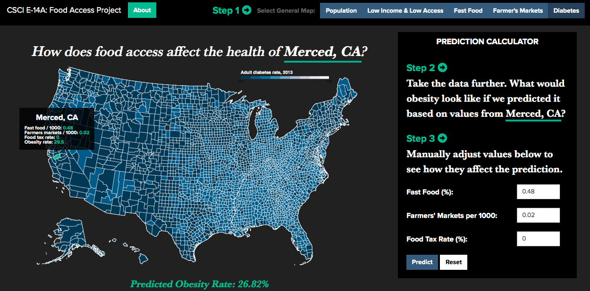
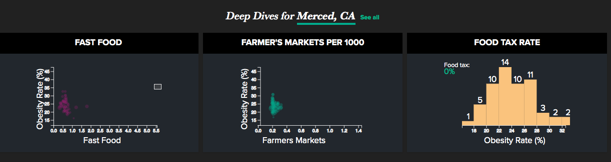

Rebecca Larson
I am a user experience designer with a technical background and a passion for creating products that put the user first. As a computer science engineer, I understand the complexity of a problem and how to break it down into solvable pieces. As a designer, I drive the solution to prioritize the goal of providing users value. I thrive in collaborative, interdisciplinary environments, and am skilled in communication and presentation.
UX Designer
- Collaborate with product teams, engineering, and stakeholders to produce user-centered design solutions.
- Conduct exploratory research to influence long-term product strategy.
- Develop prototypes to enhance understanding, testing, and communication of design.
- Advocate for users’ needs throughout end-to-end product development.
UX Design Intern
- Worked with product owners to reach design solutions.
- Built hi-fidelity designs and created prototypes.
- Organized and ran usability tests to validate designs.
Student Teacher
- Designed and ran STEM curriculums for elementary school classrooms.
- Created interactive and engaging lessons using robotics and simple machines.
Statistical Research Assistant
- Conducted research project for JAMA Internal Medicine.
- Analyzed data, wrote abstract, and presented results.
Tufts University School of Engineering
Minor in Human Factors Engineering
GPA: 3.68, magna cum laude
Harvard Extension School
GPA: 4.0
University of Canterbury
GPA: 4.0
Skills
- Python
- C
- C++
- HTML
- CSS
- JavaScript
- D3
- SQL
- R
- Prolog
- Flask
- Sketch
- Adobe XD
- Adobe Illustrator
- Jupyter Notebook
- User Centered Design
- Cross Functional Teams
- Agile Development & Scrum
UX Design
Sales Mobile App


This project involved a complete redesign of Pega’s internal sales mobile application. The sales app is used by the entire sales organization, from sales reps to the CEO. The redesign began with both an exploration of current consumer grade mobile app design and an analysis of user feedback collected on the existing sales app. We used these insights to modernize the look and feel of the app, restructure the information architecture, and add key functionality.
I have managed this project throughout end-to-end product development, from research to design to usability testing, and I currently lead the pilot of this app as we test it in the field. I continuously work with the product and engineering teams to advocate for the user and ensure the final product matches the design.
Customized Agenda Creation

This project aids sales reps in scheduling client agendas for Pega’s annual conference, PegaWorld. The impetus for this agenda app came from research that was originally intended to learn more about how sales reps used the internal sales mobile app. However, because we used open-ended research methods, we identified the previously unknown user need to automate this time-consuming and tedious part of a sales reps PegaWorld preparation. We designed, tested, and prototyped a scheduling web application. I developed the prototype using Flask to connect a Postgres database of the conference sessions to the front end built in HTML, CSS, and JavaScript. Using this live prototype, the user can easily create a customized agenda for each client and automatically save it as calendar events.
Data Visualization
 This project aims to derive insights about food access and attributes across the US by evaluating how these factors affect the health of a community. We worked to solve the question, ‘How can policy makers introduce policies that are the most effective at bettering the health of a county?’ This interactive visualization is designed for policy makers to better understand what changes could improve the health of their county.
Policy makers can see a visual summary of the US according to variables that influence the health of each community uniquely — such as income, food access, and healthy food options — both though a full map of all counties and three more linked visualizations that show deeper details on specific variables. The user can make further discoveries on a narrowed county level with linked visualizations that can drill down into each county and the Obesity Prediction Calculator, that tests how changing certain variables can influence the health of that county. This application gives policy makers comprehensive insight into the trends and specifics of the country and each county, and provides guidance in policies they should target to best help a specific county.
This web application provides a solid jumping off point to further investigate this idea of county-specific food policy. To have better accuracy, one would need more recent data with more relevant variables. The inaccuracy in the obesity prediction calculator indicates that there are likely many factors that influence community health that cannot be perfectly capture by a number, reinforcing that policy makers should not rely solely on data to introduce policy into a community. They should incorporate the voice of the community to have a fuller understanding and work with the community to find effective solutions.
This project explores alcohol consumption around the world. There exist certain stereotypes about which countries drink which types of alcohol and we wanted to build a platform to either confirm or debunk these stereotypes with this visualization. While we had fun exploring alcohol stereotypes, this interactive visualization reveals how alcohol consumption reflects the world’s history and culture through a unique perspective. We used data from the World Health Organization, which collected the average consumption of wine, beer, and spirits in liters per capita per year for every country, spanning from 1960 to 2010.